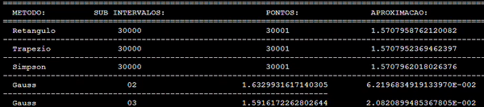

I learned to code during my second semester at university. Our class was focused on
introducing the fundamentals of scientific computing and for this purpose
we were taught mainly in FORTRAN. The second mandatory programming course
on the fourth semester was
even more focused on scientific computing, but it was largely outdated.
We would build programs to calculate and generate some
big tables with the approximation and predicted errors. If this doesn't sound fun, it's because it isn't.

I shifted my learning approach after learning more about GUI development through a book that was
given to me by a friend. I was fascinated with the idea of building interfaces. Rather than running
everything on the same old boring terminal screen, I could give programs
a bit of personality and make them responsive to commands and user inputs.
The book also contained a lot of examples, which
was very helpful and fun to play with. Since then, my approach to programming has been mainly
to learn by building it.
This means that my knowledge of theoretical computer science and even
classical algorithm stuff is rather limited, my experinece being confined
to solving a couple of leetcode problems here and there. This is something
that I intend to remedy this one day.
My main interests at the time however
remain GUI and web development, as well as scientific computing. Throughout the years I gathered
some experience as a Full Stack developer and am on the process of finish building some
applications using React,
Node, Vanilla, Django, MySQL, Docker, Ruby on Rails, Vue, among other tools.
You can check some of my finished projects on this website.